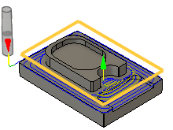
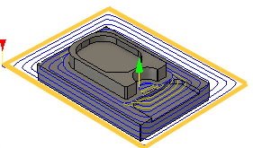

La zone sélectionnée peut avoir n'importe quelle taille ou forme.
Sélectionnez une limite fermée pour définir la zone de l'usinage. Vous pouvez choisir n'importe quelle arête du modèle ou une limite de l'esquisse. La zone usinée du brut pourrait être étendue ou limitée. Aucun sélection n'est nécessaire pour l'usinage de la boîte du brut spécifiée dans les paramètres. Si vous sélectionnez une limite plus grande que le brut, la zone de coupe sera étendue, ce qui est utile pour les tailles de brut inhabituelles. La limite d'usinage peut avoir la forme de votre choix.
 |
Calculée à partir du brut – Aucune sélection nécessaire |
 |
Une esquisse est plus grande que le brut |
|
La zone sélectionnée peut avoir n'importe quelle taille ou forme. |
REMARQUE: il ne s'agit pas d'une limite de confinement, car l'outil réalisera son approche depuis l'extérieur de la zone sélectionnée.